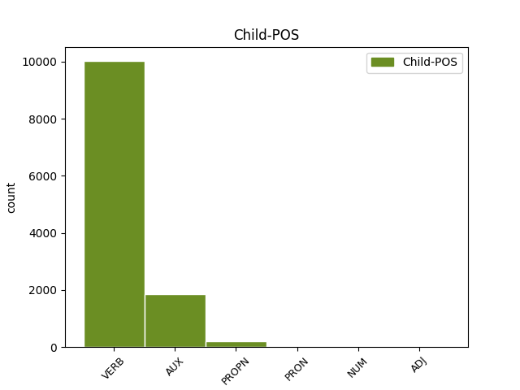

Distribution of features within this leaf

Agreement Rules sorted by frequency.
- When the dependent token is the parataxis(parataxis) of the head token, and the dependent token is VERB.
1 Hier _ _ _ _ 0 _ _ _
2 erfreue erfreuen VERB VVFIN Mood=Ind|Number=Sing|Person=3|Tense=Pres|VerbForm=Fin 0 _ _ _
3 man _ _ _ _ 0 _ _ _
4 sich _ _ _ _ 0 _ _ _
5 noch _ _ _ _ 0 _ _ _
6 immer _ _ _ _ 0 _ _ _
7 ungebremster _ _ _ _ 0 _ _ _
8 Nachfrage _ _ _ _ 0 _ _ _
9 , _ _ _ _ 0 _ _ _
10 meinte meinen VERB VVFIN Mood=Ind|Number=Sing|Person=3|Tense=Past|VerbForm=Fin 2 parataxis _ _
11 der _ _ _ _ 0 _ _ _
12 Philips-Sprecher _ _ _ _ 0 _ _ _
13 Hans _ _ _ _ 0 _ _ _
14 Driessen _ _ _ _ 0 _ _ _
15 . _ _ _ _ 0 _ _ _
1 Die _ _ _ _ 0 _ _ _
2 ersten _ _ _ _ 0 _ _ _
3 externen _ _ _ _ 0 _ _ _
4 Laufwerke _ _ _ _ 0 _ _ _
5 kommen kommen VERB VVFIN Mood=Ind|Number=Plur|Person=3|Tense=Pres|VerbForm=Fin 0 _ _ _
6 beispielsweise _ _ _ _ 0 _ _ _
7 von _ _ _ _ 0 _ _ _
8 der _ _ _ _ 0 _ _ _
9 Firma _ _ _ _ 0 _ _ _
10 QPS _ _ _ _ 0 _ _ _
11 Inc. _ _ _ _ 0 _ _ _
12 Die _ _ _ _ 0 _ _ _
13 Geräte _ _ _ _ 0 _ _ _
14 der _ _ _ _ 0 _ _ _
15 QPS-Que!-Reihe _ _ _ _ 0 _ _ _
16 sind sein AUX VAFIN Mood=Ind|Number=Plur|Person=3|Tense=Pres|VerbForm=Fin 5 parataxis _ _
17 mit _ _ _ _ 0 _ _ _
18 CD-RW-Brenner _ _ _ _ 0 _ _ _
19 , _ _ _ _ 0 _ _ _
20 DVD-RAM-Laufwerk _ _ _ _ 0 _ _ _
21 oder _ _ _ _ 0 _ _ _
22 als _ _ _ _ 0 _ _ _
23 sogenanntes _ _ _ _ 0 _ _ _
24 M3 _ _ _ _ 0 _ _ _
25 Dual _ _ _ _ 0 _ _ _
26 Drive _ _ _ _ 0 _ _ _
27 , _ _ _ _ 0 _ _ _
28 das _ _ _ _ 0 _ _ _
29 Festplatte _ _ _ _ 0 _ _ _
30 und _ _ _ _ 0 _ _ _
31 CD-ROM-Laufwerk _ _ _ _ 0 _ _ _
32 in _ _ _ _ 0 _ _ _
33 einem _ _ _ _ 0 _ _ _
34 Gerät _ _ _ _ 0 _ _ _
35 integriert _ _ _ _ 0 _ _ _
36 , _ _ _ _ 0 _ _ _
37 erhältlich _ _ _ _ 0 _ _ _
38 . _ _ _ _ 0 _ _ _
1 Vor _ _ _ _ 0 _ _ _
2 allem _ _ _ _ 0 _ _ _
3 bei _ _ _ _ 0 _ _ _
4 Büchern _ _ _ _ 0 _ _ _
5 , _ _ _ _ 0 _ _ _
6 Musik _ _ _ _ 0 _ _ _
7 und _ _ _ _ 0 _ _ _
8 Software _ _ _ _ 0 _ _ _
9 habe haben AUX VAFIN Mood=Ind|Number=Sing|Person=3|Tense=Pres|VerbForm=Fin 0 _ _ _
10 sich _ _ _ _ 0 _ _ _
11 der _ _ _ _ 0 _ _ _
12 Internet-Einkauf _ _ _ _ 0 _ _ _
13 schon _ _ _ _ 0 _ _ _
14 neben _ _ _ _ 0 _ _ _
15 den _ _ _ _ 0 _ _ _
16 klassischen _ _ _ _ 0 _ _ _
17 Vertriebswegen _ _ _ _ 0 _ _ _
18 etabliert _ _ _ _ 0 _ _ _
19 , _ _ _ _ 0 _ _ _
20 so _ _ _ _ 0 _ _ _
21 Franzen Franzen PROPN NE Number=Sing|Person=3 9 parataxis _ _
22 . _ _ _ _ 0 _ _ _
1 Bei _ _ _ _ 0 _ _ _
2 einem _ _ _ _ 0 _ _ _
3 Marktanteil _ _ _ _ 0 _ _ _
4 von _ _ _ _ 0 _ _ _
5 fast _ _ _ _ 0 _ _ _
6 25 _ _ _ _ 0 _ _ _
7 Prozent _ _ _ _ 0 _ _ _
8 geht gehen VERB VVFIN Mood=Ind|Number=Sing|Person=3|Tense=Pres|VerbForm=Fin 0 _ _ _
9 es _ _ _ _ 0 _ _ _
10 der _ _ _ _ 0 _ _ _
11 Serverabteilung _ _ _ _ 0 _ _ _
12 des _ _ _ _ 0 _ _ _
13 Konzerns _ _ _ _ 0 _ _ _
14 offenbar _ _ _ _ 0 _ _ _
15 prächtig _ _ _ _ 0 _ _ _
16 , _ _ _ _ 0 _ _ _
17 obwohl _ _ _ _ 0 _ _ _
18 Big _ _ _ _ 0 _ _ _
19 Blue _ _ _ _ 0 _ _ _
20 im _ _ _ _ 0 _ _ _
21 zweiten _ _ _ _ 0 _ _ _
22 Quartal _ _ _ _ 0 _ _ _
23 insgesamt _ _ _ _ 0 _ _ _
24 über _ _ _ _ 0 _ _ _
25 vier _ _ _ _ 0 _ _ _
26 Prozent _ _ _ _ 0 _ _ _
27 weniger _ _ _ _ 0 _ _ _
28 Hardware _ _ _ _ 0 _ _ _
29 absetzen _ _ _ _ 0 _ _ _
30 konnte _ _ _ _ 0 _ _ _
31 , _ _ _ _ 0 _ _ _
32 als _ _ _ _ 0 _ _ _
33 im _ _ _ _ 0 _ _ _
34 Vergleichszeitraum _ _ _ _ 0 _ _ _
35 des _ _ _ _ 0 _ _ _
36 Vorjahres _ _ _ _ 0 _ _ _
37 - _ _ _ _ 0 _ _ _
38 eine ein PRON PIS Case=Nom|Gender=Fem|Number=Sing|Person=3|PronType=Ind,Neg,Tot 8 parataxis _ _
39 der _ _ _ _ 0 _ _ _
40 Ursachen _ _ _ _ 0 _ _ _
41 für _ _ _ _ 0 _ _ _
42 den _ _ _ _ 0 _ _ _
43 Umsatzrückgang _ _ _ _ 0 _ _ _
44 des _ _ _ _ 0 _ _ _
45 Konzerns _ _ _ _ 0 _ _ _
46 . _ _ _ _ 0 _ _ _
1 Davon _ _ _ _ 0 _ _ _
2 studieren _ _ _ _ 0 _ _ _
3 1.303.000 _ _ _ _ 0 _ _ _
4 ( _ _ _ _ 0 _ _ _
5 73 _ _ _ _ 0 _ _ _
6 Prozent _ _ _ _ 0 _ _ _
7 ) _ _ _ _ 0 _ _ _
8 an _ _ _ _ 0 _ _ _
9 Universitäten _ _ _ _ 0 _ _ _
10 oder _ _ _ _ 0 _ _ _
11 gleichrangigen _ _ _ _ 0 _ _ _
12 wissenschaftlichen _ _ _ _ 0 _ _ _
13 Hochschulen Hochschule NOUN NN Gender=Fem|Number=Plur|Person=3 0 _ _ _
14 , _ _ _ _ 0 _ _ _
15 458.000 458.000 NUM CARD Number=Plur|NumType=Card|Person=3 13 parataxis _ _
16 ( _ _ _ _ 0 _ _ _
17 25 _ _ _ _ 0 _ _ _
18 Prozent _ _ _ _ 0 _ _ _
19 ) _ _ _ _ 0 _ _ _
20 an _ _ _ _ 0 _ _ _
21 Fach- _ _ _ _ 0 _ _ _
22 oder _ _ _ _ 0 _ _ _
23 Verwaltungsfachhochschulen _ _ _ _ 0 _ _ _
24 und _ _ _ _ 0 _ _ _
25 31.000 _ _ _ _ 0 _ _ _
26 ( _ _ _ _ 0 _ _ _
27 2 _ _ _ _ 0 _ _ _
28 Prozent _ _ _ _ 0 _ _ _
29 ) _ _ _ _ 0 _ _ _
30 an _ _ _ _ 0 _ _ _
31 Kunsthochschulen _ _ _ _ 0 _ _ _
32 . _ _ _ _ 0 _ _ _
Disagree Examples:
1 Die _ _ _ _ 0 _ _ _
2 Marktchancen _ _ _ _ 0 _ _ _
3 für _ _ _ _ 0 _ _ _
4 Powerline _ _ _ _ 0 _ _ _
5 schätzt schätzen VERB VVFIN Mood=Ind|Number=Sing|Person=3|Tense=Pres|VerbForm=Fin 0 _ _ _
6 die _ _ _ _ 0 _ _ _
7 Studie _ _ _ _ 0 _ _ _
8 hingegen _ _ _ _ 0 _ _ _
9 geringer _ _ _ _ 0 _ _ _
10 ein _ _ _ _ 0 _ _ _
11 : _ _ _ _ 0 _ _ _
12 fünf _ _ _ _ 0 _ _ _
13 Millionen _ _ _ _ 0 _ _ _
14 Haushalte _ _ _ _ 0 _ _ _
15 sollen sollen AUX VMFIN Mood=Ind|Number=Plur|Person=3|Tense=Pres|VerbForm=Fin|VerbType=Mod 5 parataxis _ _
16 2010 _ _ _ _ 0 _ _ _
17 über _ _ _ _ 0 _ _ _
18 die _ _ _ _ 0 _ _ _
19 Steckdose _ _ _ _ 0 _ _ _
20 surfen _ _ _ _ 0 _ _ _
21 . _ _ _ _ 0 _ _ _
1 Mit _ _ _ _ 0 _ _ _
2 dem _ _ _ _ 0 _ _ _
3 Zusammenschluss _ _ _ _ 0 _ _ _
4 reagieren reagieren VERB VVFIN Mood=Ind|Number=Plur|Person=3|Tense=Pres|VerbForm=Fin 0 _ _ _
5 beide _ _ _ _ 0 _ _ _
6 Unternehmen _ _ _ _ 0 _ _ _
7 auf _ _ _ _ 0 _ _ _
8 den _ _ _ _ 0 _ _ _
9 harten _ _ _ _ 0 _ _ _
10 Wettbewerb _ _ _ _ 0 _ _ _
11 , _ _ _ _ 0 _ _ _
12 berichtet berichten VERB VVFIN Mood=Ind|Number=Sing|Person=3|Tense=Pres|VerbForm=Fin 4 parataxis _ _
13 die _ _ _ _ 0 _ _ _
14 Wirtschaftszeitung _ _ _ _ 0 _ _ _
15 . _ _ _ _ 0 _ _ _
1 Nachdem _ _ _ _ 0 _ _ _
2 der _ _ _ _ 0 _ _ _
3 Kurs _ _ _ _ 0 _ _ _
4 nun _ _ _ _ 0 _ _ _
5 dramatisch _ _ _ _ 0 _ _ _
6 in _ _ _ _ 0 _ _ _
7 den _ _ _ _ 0 _ _ _
8 Keller _ _ _ _ 0 _ _ _
9 gerauscht _ _ _ _ 0 _ _ _
10 ist _ _ _ _ 0 _ _ _
11 ( _ _ _ _ 0 _ _ _
12 er _ _ _ _ 0 _ _ _
13 lag liegen VERB VVFIN Mood=Ind|Number=Sing|Person=3|Tense=Past|VerbForm=Fin 0 _ _ _
14 in _ _ _ _ 0 _ _ _
15 den _ _ _ _ 0 _ _ _
16 letzten _ _ _ _ 0 _ _ _
17 Tagen _ _ _ _ 0 _ _ _
18 zeitweise _ _ _ _ 0 _ _ _
19 unter _ _ _ _ 0 _ _ _
20 20 _ _ _ _ 0 _ _ _
21 Euro _ _ _ _ 0 _ _ _
22 ) _ _ _ _ 0 _ _ _
23 , _ _ _ _ 0 _ _ _
24 verlangen verlangen VERB VVFIN Mood=Ind|Number=Plur|Person=3|Tense=Pres|VerbForm=Fin 13 parataxis _ _
25 sie _ _ _ _ 0 _ _ _
26 ihr _ _ _ _ 0 _ _ _
27 Geld _ _ _ _ 0 _ _ _
28 zurück _ _ _ _ 0 _ _ _
29 . _ _ _ _ 0 _ _ _
1 " _ _ _ _ 0 _ _ _
2 Wir _ _ _ _ 0 _ _ _
3 sind sein AUX VAFIN Mood=Ind|Number=Plur|Person=1|Tense=Pres|VerbForm=Fin 0 _ _ _
4 weiterhin _ _ _ _ 0 _ _ _
5 davon _ _ _ _ 0 _ _ _
6 überzeugt _ _ _ _ 0 _ _ _
7 , _ _ _ _ 0 _ _ _
8 dass _ _ _ _ 0 _ _ _
9 die _ _ _ _ 0 _ _ _
10 Angaben _ _ _ _ 0 _ _ _
11 korrekt _ _ _ _ 0 _ _ _
12 sind _ _ _ _ 0 _ _ _
13 " _ _ _ _ 0 _ _ _
14 , _ _ _ _ 0 _ _ _
15 sagte sagen VERB VVFIN Mood=Ind|Number=Sing|Person=3|Tense=Past|VerbForm=Fin 3 parataxis _ _
16 ein _ _ _ _ 0 _ _ _
17 Unternehmens-Sprecher _ _ _ _ 0 _ _ _
18 gegenüber _ _ _ _ 0 _ _ _
19 heise _ _ _ _ 0 _ _ _
20 online _ _ _ _ 0 _ _ _
21 . _ _ _ _ 0 _ _ _
1 Verbringt _ _ _ _ 0 _ _ _
2 er _ _ _ _ 0 _ _ _
3 in _ _ _ _ 0 _ _ _
4 dem _ _ _ _ 0 _ _ _
5 Monat _ _ _ _ 0 _ _ _
6 weniger _ _ _ _ 0 _ _ _
7 Stunden _ _ _ _ 0 _ _ _
8 im _ _ _ _ 0 _ _ _
9 Internet _ _ _ _ 0 _ _ _
10 , _ _ _ _ 0 _ _ _
11 als _ _ _ _ 0 _ _ _
12 er _ _ _ _ 0 _ _ _
13 bezahlt _ _ _ _ 0 _ _ _
14 hat _ _ _ _ 0 _ _ _
15 , _ _ _ _ 0 _ _ _
16 so _ _ _ _ 0 _ _ _
17 verfallen verfallen VERB VVFIN Mood=Ind|Number=Plur|Person=3|Tense=Pres|VerbForm=Fin 0 _ _ _
18 die _ _ _ _ 0 _ _ _
19 restlichen _ _ _ _ 0 _ _ _
20 Stunden _ _ _ _ 0 _ _ _
21 ; _ _ _ _ 0 _ _ _
22 surft _ _ _ _ 0 _ _ _
23 er _ _ _ _ 0 _ _ _
24 dagegen _ _ _ _ 0 _ _ _
25 mehr _ _ _ _ 0 _ _ _
26 , _ _ _ _ 0 _ _ _
27 kostet kosten VERB VVFIN Mood=Ind|Number=Sing|Person=3|Tense=Pres|VerbForm=Fin 17 parataxis _ _
28 jede _ _ _ _ 0 _ _ _
29 weitere _ _ _ _ 0 _ _ _
30 Minute _ _ _ _ 0 _ _ _
31 2,9 _ _ _ _ 0 _ _ _
32 Pfennig _ _ _ _ 0 _ _ _
33 . _ _ _ _ 0 _ _ _